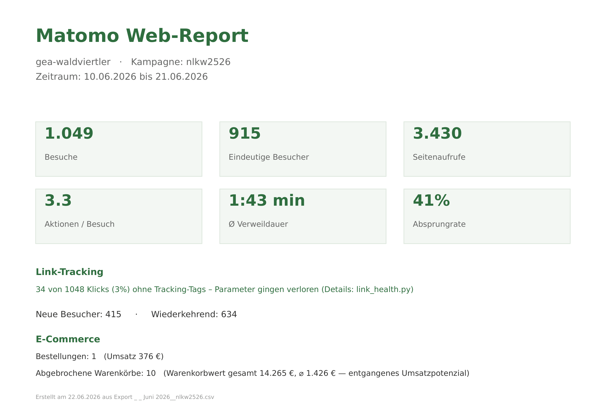
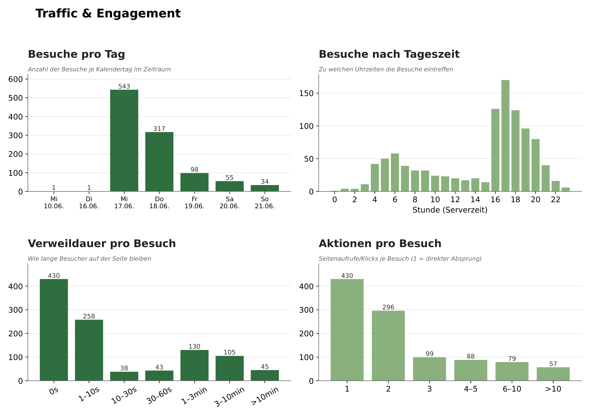
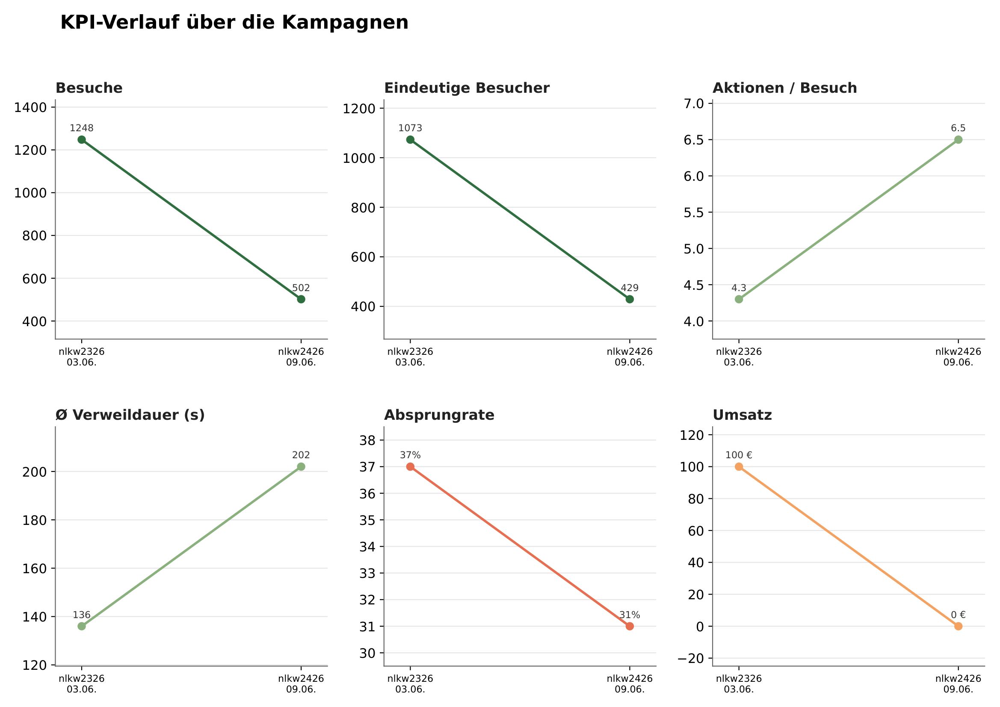

Matomo-Kampagnen-Tracking aufgesetzt und ein Python-Toolset gebaut, das wöchentliche CSV-Exporte automatisch in mehrseitige PDF-Reports mit Diagrammen verwandelt — inkl. eigenständiger .exe für Kollegen ohne Python.
pk_-Parameter je Block und Kampagne) und den richtigen Export-Weg definiert: das segmentierte Besucherprotokoll (Visits-Log) statt des aggregierten Kampagnen-Berichts — nur so stehen Geräte-, Orts-, Seiten- und Tracking-Daten zur Verfügung.
matomo_report.py — mehrseitiger PDF-Report je Export: KPIs, Traffic & Engagement, Geräte, Publikum, Newsletter-Blöcke, Produkt-Interesse und Top-Seiten.link_health.py — prüft jeden Newsletter-Link, ob die Tracking-Tags ankommen (OK / Tags verloren / defekte URL).campaign_trend.py — vergleicht alle Kampagnen über die Zeit mit KPI-Tabelle und Verlaufskurven.newsletter_report.py) führt alle drei Tools nacheinander aus. Daraus habe ich mit PyInstaller eine eigenständige .exe gebaut: CSV in den Ordner legen, Doppelklick — fertige PDFs und CSVs. Kein Python, keine Kommandozeile. Dazu eine bebilderte Anleitung als PDF.
#anker steht — ein konkreter Fix fürs Newsletter-Template.


